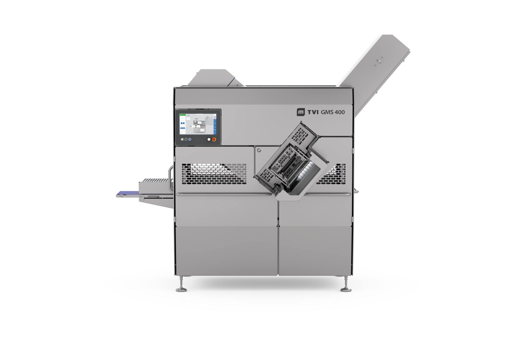
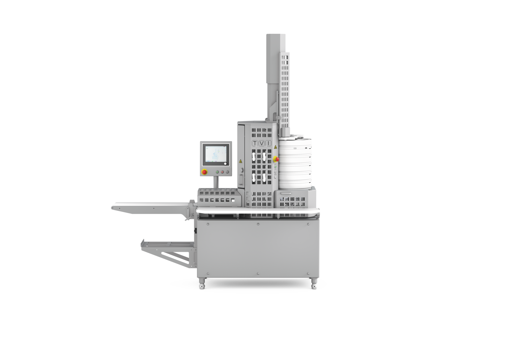
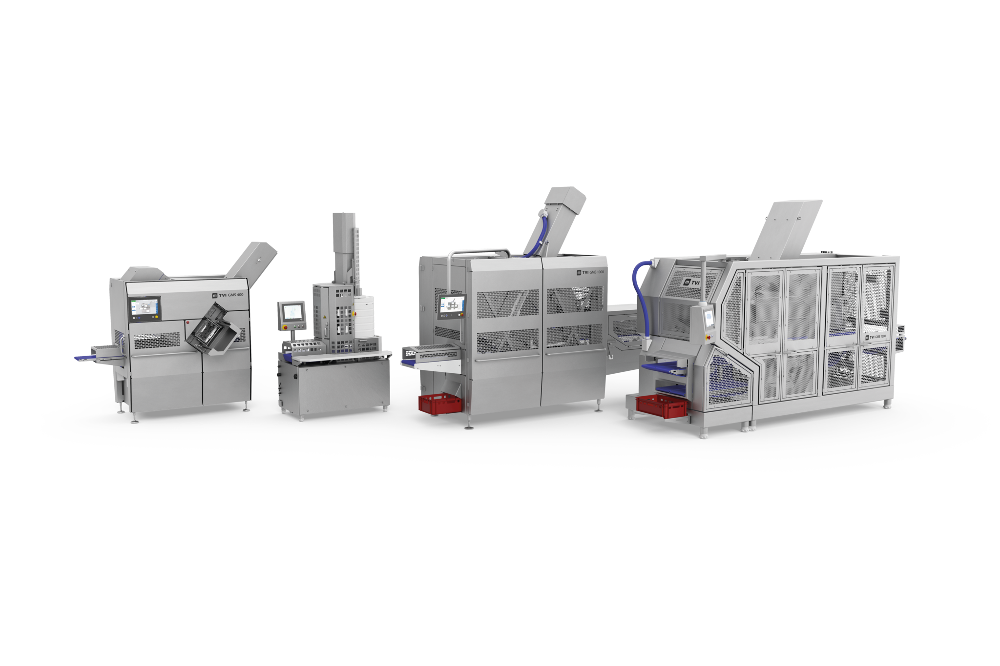
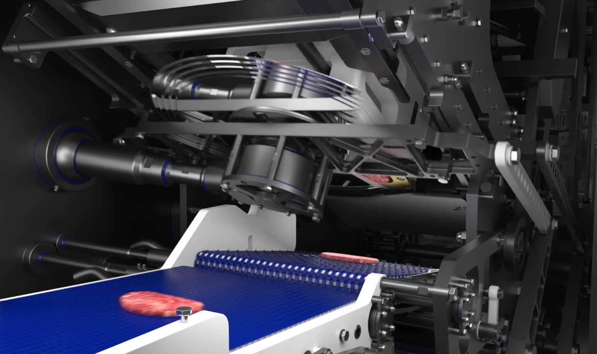

MULTIVAC TVI
TVI ポーションカッター
歩留まり向上と定貫化で利益率向上を実現するポーション加工システム
TVIポーションカッターとは
TVIポーションカッターは、不定形な原料を一定の重量・形状・厚みに近づけながらカットする加工機です。TVI独自のプレス成形（容積成形）方式により、歩留まり向上、原料ロス削減、商品規格の均一化を実現。原料価格高騰や人手不足が進む食品加工現場において、利益率向上と生産性向上に貢献します。
一貫提案
- SHRODER インジェクター・マッサージャー
- Seydelmann トロリータンブラー
- TVIポーションカッター
- MULTIVAC 深絞り包装機／トレーシーラー
- 印字システム（サーマルプリンタ／UVレーザー）
- MULTIVAC ラベラー
- MULTIVAC 画像検査システム
- お客様原料による実機テスト
- テンパリング条件の最適化支援
- 歩留まり改善効果の検証
- 商品仕様に応じた最適条件の設定
最適な機種提案
- GMS400：中小規模向け。導入しやすいコンパクトモデル
- GMS520：汎用モデル。幅広い用途に対応
- GMS1000：高精度・高生産性モデル。次世代スタンダード
- GMS1600：大規模工場向け。高処理能力モデル
- 自動投入システム
- 搬送設備
- 包装機との連携
- 検査工程との連携
- 省人化ラインの構築






まずはお気軽にお問い合わせください。
Hygienic Design
食品工場向けに衛生性と洗浄性に配慮した設計を採用し、部品点数を削減しています。
国内サポート体制
導入テストから立上げ、アフターサポートまで国内スタッフが対応します。
グローバル導入実績
食肉加工分野において世界各国で採用されているポーション加工ソリューションです。MULTIVACグループの加工機ブランドとして、日本国内でも導入実績が拡大しています。
A. TVIポーションカッターは、不定形な原料を一定の重量・形状・厚みに近づけながらカットする加工機です。
A. 一般的なスライサーが厚みを基準としたスライス加工を行うのに対し、TVIポーションカッターは重量や形状を考慮した定貫スライス加工が可能です。また、スライス加工（Slice）だけでなく、短冊切り加工（Strip）や角切り加工（Dice）にも対応。TVI独自のプレス成形（容積成形）方式により、均一な重量・形状と高い歩留まりを実現します。
A. 牛肉、豚肉、鶏肉、ラム肉をはじめ、骨付き肉・骨なし肉、水産原料、チーズなど幅広い原料に対応可能です。
A. はい。TVIポーションカッターは骨付き肉・骨なし肉の両方に対応しています。豚肉やラム肉の骨付き製品をはじめ、様々な原料のポーション加工が可能です。加工対象に応じて最適な機種をご提案します。
A. スライス加工、短冊切り加工、角切り加工などに対応可能です。ステーキ、とんかつ、焼肉、牛丼、プルコギ、カレー用原料など幅広い用途に対応します。
A. 歩留まり向上、原料ロス削減、商品規格の均一化、省人化、利益率向上が期待できます。
A. 歩留まり向上とは、同じ原料からより多くの製品を生産できる状態にすることです。TVIポーションカッターは、グリッパーロスや原料ロスを抑えることで、販売可能なポーション数の向上に貢献します。
A. 定貫カットとは、あらかじめ設定した重量に近づけて製品をカットする加工方法です。定量販売商品や規格商品の製造に適しています。
A. ギブアウェイとは、規格重量よりも重い商品を出荷することで発生する原料ロスのことです。TVIのポーションカッターは高精度な重量管理により、過剰重量商品の発生を抑制し、原料コストの最適化と利益率向上に貢献します。
A. ポーションカッターで原料を保持する際に発生するロスです。TVIはグリッパーロスを低減する設計により、販売可能なポーション数の向上に貢献します。
A. 原料条件や商品仕様によって異なりますが、歩留まり向上、ギブアウェイ削減、原料ロス低減により利益率改善が期待できます。
A. TVI独自のプレス成形（容積成形）方式では、成形とポーションカットを1台で実施できます。別途、成形機を設置する必要がなく、省スペース化や設備投資の抑制に貢献します。
A. 原料を圧力で成形しながらカットする方式です。重量だけでなく形状も均一化できるため、商品規格の安定化や包装工程の効率化に貢献します。また、成形機を別途設置する必要がなく、省スペースなライン構築が可能です。
A. 原木を複数のゾーンに分け、形状に応じて異なる厚みや重量設定でカットする機能です。原木の太い部分や細い部分に合わせて重量補正を行うことで、重量ばらつきの低減と歩留まり向上に貢献します。
A. ポーションカット前に原料温度を最適な状態へ調整する工程です。表面を適度に冷却しながら内部の柔らかさを維持することで、高精度な定貫カットや安定した成形品質を実現します。
A. はい。重量や厚みの変更はタッチパネルから簡単に設定できます。
A. はい。トレーシーラーや深絞り包装機と連携し、加工から包装までの自動化ラインを構築できます。
A. はい。お客様の原料を使用した実機テストが可能です。